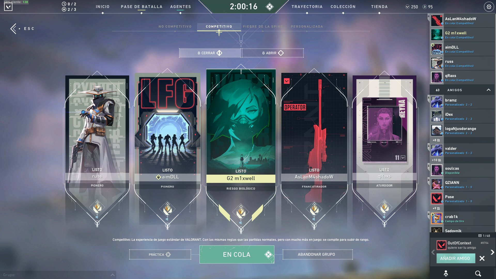

The latest edition of Ask Valorant basically confirms that Riot, too, wants a replay feature in Valorant. Additionally, the team talked about smurfing and how they plan on handling this very real problem in their hero-shooter.
Riot acknowledges smurfing is a major problem in Valorant. They’ve been collecting feedback from their community on this issue and are currently investigating the current state of smurfing running amok in Valorant.
However, they don’t have a plan yet since they’re still investigating. The team did share some information they’ve learned so far,
“For example, we’ve noticed that a big chunk of smurfs do so with no malicious intent—they’re trying to play competitively with friends outside of their rank. Whereas, there may still be a minority who create smurf accounts with bad intent.”
They note that combating smurfing isn’t only about the punishment. The goal is to make Valorant more accessible so people aren’t intimidated or frustrated by smurfs, thus discouraging smurfing in the first place. They spoke about the competitive scene regarding smurfing,
“We want to emphasize that this is one of the competitive team’s primary focuses at the moment, and although we are in the investigation phase, and it will take us some time to act on our findings, know that we are listening and agree that this is a problem worthy of heavy resources.”
Regarding the replay system, this is something the team also wants. Unfortunately, they have nothing new to share on this front. However, given that Valorant is a competitive title, it continues o be odd that it does not have a replay system.

Smurfing in Valorant